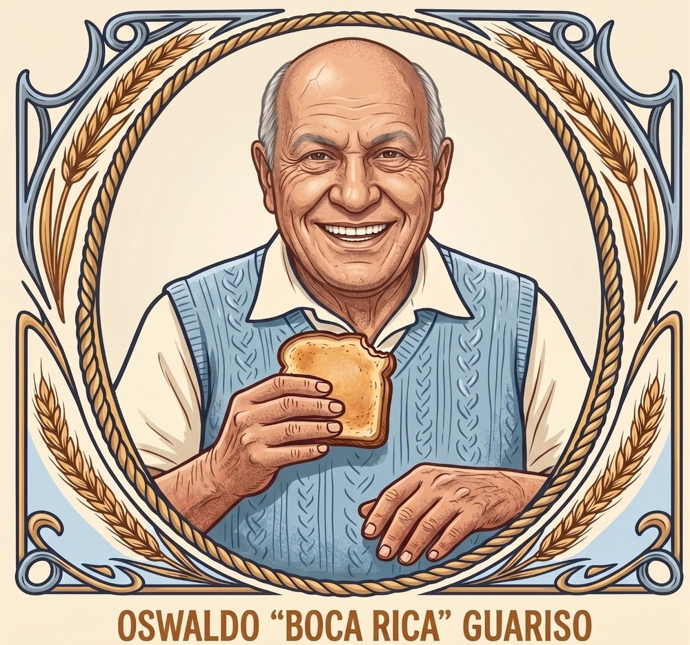

Memória
Uma lembrança registra experiências, práticas e costumes de uma época.
A experiência humana como registro cultural, fonte de perguntas e ponto de diálogo com a investigação científica.

Esta seção preserva a memória de Oswaldo como parte de uma cultura descendente e familiar. Seu valor está no registro da experiência, dos hábitos, das narrativas e dos conhecimentos construídos na vida cotidiana.
Esses saberes não são apresentados como evidência científica por si mesmos. São documentos humanos e culturais que podem contextualizar fenômenos, revelar práticas, inspirar hipóteses e produzir perguntas relevantes para investigação histórica, social, educacional e científica.
Memória e ciência não são a mesma coisa — mas podem conversar. O rigor começa quando distinguimos relato, contexto, hipótese e evidência.
Uma lembrança registra experiências, práticas e costumes de uma época.
O relato é situado no tempo, no espaço e nas relações sociais que o produziram.
O registro pode revelar padrões, contradições e questões que merecem investigação.
Métodos, referências e evidências permitem testar, comparar e sistematizar conhecimento.
Uma lembrança pode registrar um costume. Um costume pode revelar uma prática social. Uma prática social pode gerar uma questão histórica ou sociológica. Uma técnica aprendida pela experiência pode motivar uma pergunta de engenharia, saúde, educação ou tecnologia.
O núcleo poderá receber fotografias, relatos, documentos, histórias de família, expressões, práticas de trabalho, costumes e contextualizações. Cada item poderá ser associado a temas e pesquisas relacionadas, criando pontes entre a memória e outras áreas do portal.
Novos registros publicados no CMS passam a aparecer aqui automaticamente.
Carregando publicações…